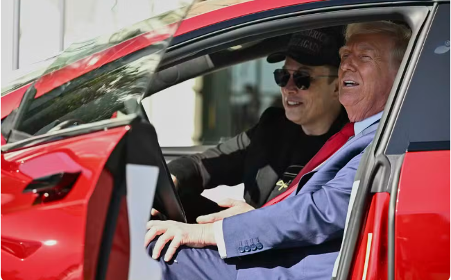

Elon Musk na política ameaça a Tesla e o seu império?
Investidores questionam o envolvimento do bilionário da tecnologia na administração de Donald Trump, enquanto as ações da Tesla, sua empresa de carros elétricos, despencam.

Elon Musk e Donald Trump em um evento.
Este talvez tenha sido o sinal mais claro de que as manobras políticas do CEO da Tesla, Elon Musk, saíram pela culatra. Na última terça-feira (11), o presidente dos Estados Unidos, Donald Trump, posou ao lado do bilionário da tecnologia e de um Tesla Model S vermelho, do lado de fora da Casa Branca, e declarou estar comprando o carro elétrico para uso de sua equipe e pagando o preço total.
O endosso sem precedentes de Trump ao gigante dos veículos elétricos ocorre após meses de críticas crescentes sobre o envolvimento crescente de Musk na política americana e estrangeira — incluindo o apoio a partidos de extrema direita na Europa — e depois que as ações da Tesla perderam bilhões de dólares.